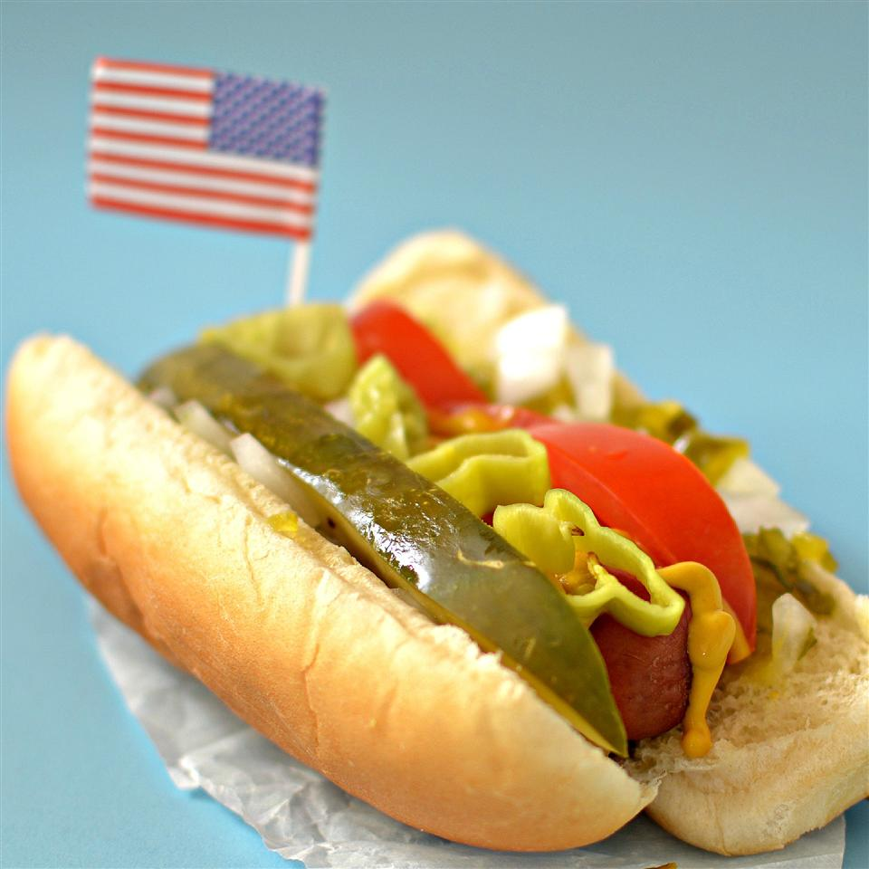

HotDog

A hot dog is a food consisting of a grilled or steamed sausage served in the slit of a partially sliced bun.
Ingredients
- Large saucepan
- Water
- Hot dogs
- Tongs
Steps
-
Fill a large saucepan with enough water to cover hot dogs (about 1 cup per hot dog).
- Bring water to a boil.
- Add the hot dogs one at a time using tongs.
- Reduce the heat to the low setting and allow the hot dogs to simmer for anywhere from 3 to 6 minutes (the
longer they simmer, the crispier they'll be).
- Once they're done, use tongs to remove them from the water and pat them dry with paper towels.